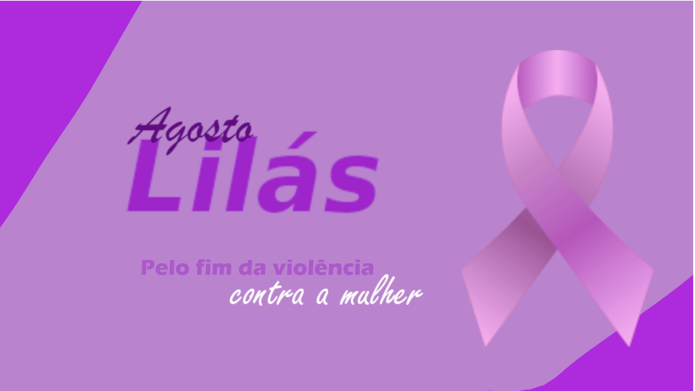

O que é
Agosto Lilás?
A campanha do Agosto Lilás foi estabelecida pelo governo federal, transformando o mês de agosto em um período dedicado à conscientização e combate à violência contra a mulher. A escolha deste mês se deu pela sanção da Lei Maria da Penha (Lei Federal nº 11.340/2006), assinada no dia 7 de agosto, sendo uma referência fundamental no enfrentamento da violência doméstica no Brasil.
A campanha procura sensibilizar e informar a população sobre a identificação de situações de violência e os canais disponíveis para denúncias, promovendo uma rede de apoio e proteção para as vítimas. Durante agosto, governo e empresas realizam campanhas, promoções e eventos voltados para mulheres, incentivando a conscientização de toda a sociedade.
